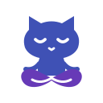
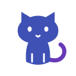
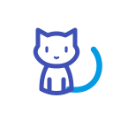
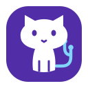

01Cleanest everyday mark

Quiet Cat
Simple silhouette. A seated cat settles into a clear lotus pose.

NormalZen
GitHub Manager
Small-size check
GitHub Manager · Logo exploration
Three original cat marks, simplified for a clear header icon and a playful normal → zen transition.

Simple silhouette. A seated cat settles into a clear lotus pose.

NormalA lighter line icon. The tail opens into an ensō-inspired circle.

NormalA bold app icon. Git-like branches resolve into a calm, centered cat.

Normal